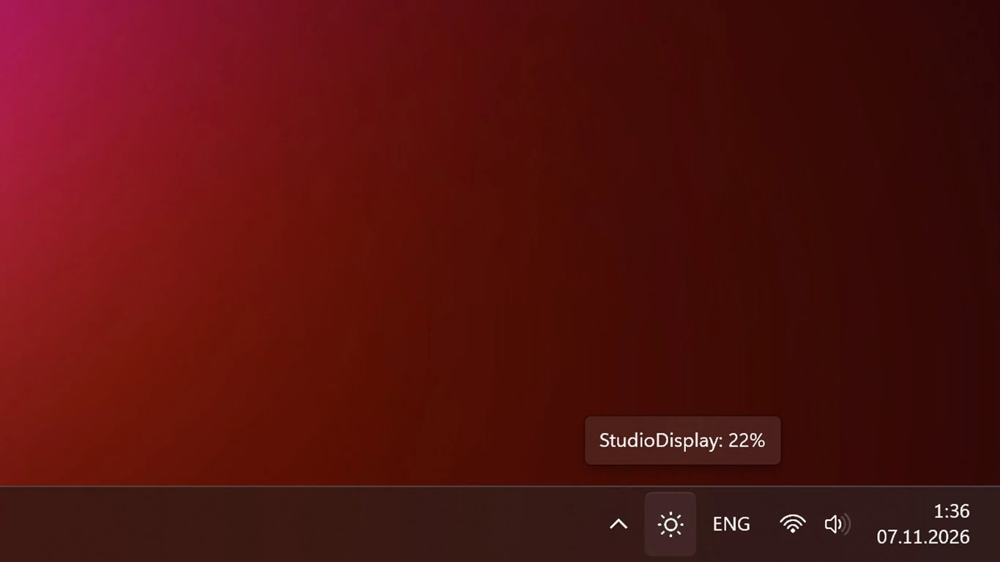

Guides › Windows
How to change external monitor brightness on Windows 11
Updated November 2026
Short answer: Windows 11's brightness slider is made for a laptop's built-in screen, so it often does nothing for an external monitor. Most monitors can still take brightness from the PC over DDC/CI: switch DDC/CI on in the monitor's own menu, then use an app such as Brightly to change it from the taskbar.
What DDC/CI is
DDC/CI is a standard way for a PC to send settings to a monitor through the display cable, over HDMI, DisplayPort or USB-C. Almost every monitor made in the last ten years supports it, though some ship with it switched off.
Step 1: switch on DDC/CI
Open the monitor's menu with its own buttons and look for DDC/CI, often under System, Setup or Others. Set it to On.
Step 2: change the brightness from Windows
- Install Brightly from the Microsoft Store and open it. Its icon appears next to the clock.
- Scroll the mouse wheel over the icon, or click it for a slider for every display.
- Tick the displays the wheel and the keys should change, one or all of them together.

Each screen shows its own level while it changes. A monitor that is slow to wake up appears by itself within about 15 seconds.
Brightly for Windows
Brightness for every display, right from the taskbar. Try it free for 7 days.
Frequently asked questions
My monitor isn't in the list. Why?
Its DDC/CI is off, or something between the PC and the monitor blocks it: some docks, KVM switches and TVs don't pass it through. Then only the monitor's own buttons change it.
Does changing brightness this way wear out the monitor?
No. It is the same setting the monitor's own buttons change.